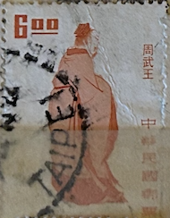
| SOURCE | TITLE| IMAGE MATCH | click to source page |
| Colnect | Stamp: King Wu of Zhou (Taiwan (Republic of China)(Chinese Culture Heroes) Mi:TW 950XA,Sn:TW 1796,Yt:TW 883,Sg:TW 898 📮 | 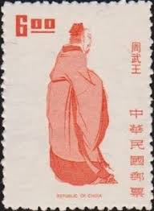 |
| eBay | CHINA TAIWAN 1796a - Historical Rulers "King Wu" (pa65559) | eBay | 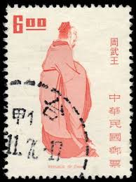 |
| Dreamstime.com | Postmark Taiwan Stock Photos - Free & Royalty-Free Stock Photos from Dreamstime | 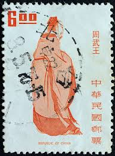 |
| Мешок | Марки в разделе Коллекционное. #1972 год по возрастанию даты окончания, стр. 10 | 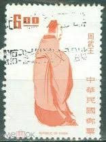 |
| Shutterstock | 1+ Thousand Ancient Chinese Postage Stamps Royalty-Free Images, Stock Photos & Pictures | Shutterstock | 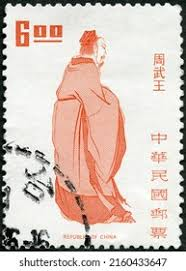 |
| Alamy | King zhou china hi-res stock photography and images - Alamy | 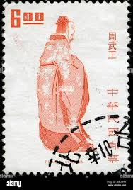 |
| Find Your Stamps Value | King Wu (ruled 1121-1114 B.C.) - 周武王（治理1121-1114 公元前） $6 Deep orange stamp price, value | 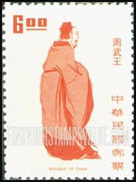 |
| Find Your Stamps Value | Paintings by Fu Baoshi (1904-65): The Road to Shanyin - 傅抱石作品选, (1904-65): 山阴道上$1 Multicolored stamp price, value | 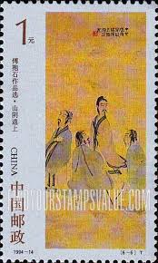 |
| eBay | Taiwan 1973 FDC (25-30) +Ancient Saints #1791-98 +Confucius Cachet +Popular FDCs | eBay | 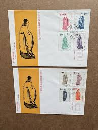 |
| Find Your Stamps Value | Ancient Chinese Writers: Qu Yuan walking away with sword under arm - 中国古代文学家: 屈原用剑走开$1 Multicolored stamp price, value | 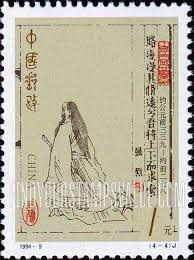 |
| zaps.dev | Jen Kwan - Person Library | 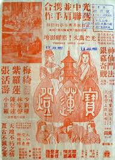 |
| eBay | China 1994-9 Literators of Ancient China (2nd series) stamp 古代文學家 | eBay | 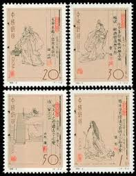 |
| Find Your Stamps Value | Ancient Chinese Writers: Si Maqian writing on scroll - 中国古代文学家: 司马迁写在卷轴上50f Multicolored stamp price, value | 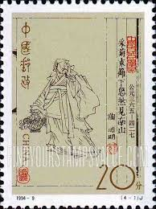 |
| Japanese? > English Antique Prints Taken From an Old Book : r/translator | 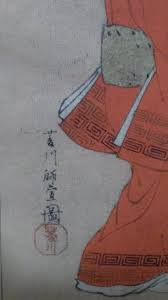 | |
| Amazon.com | Amazon.com: Please Do Not Care Me seriocomic talk about the beauty (Chinese Edition): 9787810976503: li qi: Libros | 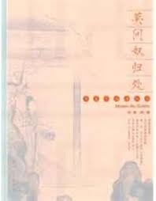 |
| eBay | Used 1961-1970 Year of Issue Japanese Stamps for sale | eBay | 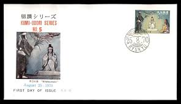 |
| eBay | China PRC 1994-9 Scott 2501-04 Literators of Ancient China Single Set | eBay | 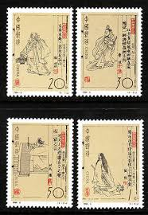 |
| Archive | Pin san guo xue shuo hua : Free Download, Borrow, and Streaming : Internet Archive | 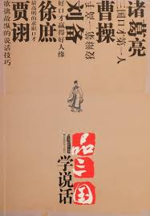 |
| PICRYL | Stamp of USSR 1922 - postal stamp - PICRYL - Public Domain Media Search Engine Public Domain Search | 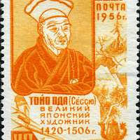 |
| Xabusiness.com | T33 Scott 1469-70 Silk Paintings Unearthed from an Ancient Yomb of Warring States Period, Changsha - China Stamps | 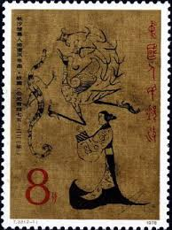 |
| eBay | 澳门购物网站🤝Neyhow for sale | eBay | 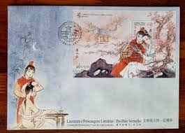 |
| Freestampcatalogue.com | Stamps with the theme Authors - Freestampcatalogue.com - The free online stampcatalogue with over 500.000 stamps listed. | 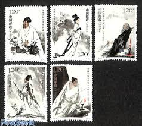 |
| eBay | ub030 Chinese Comic: Plum Girl (梅女) Liaozhai Zhiyi Vol 1 | eBay | 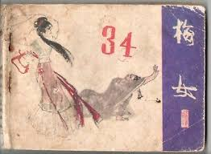 |
| Artsy | Robin Roi | Pearl (2019) | Available for Sale | Artsy | 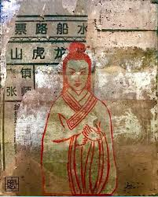 |
| eBay | CHINA 2023-24 WRITERS OF ANCIENT CHINA, stamp set of 5, Mint, NH | eBay | 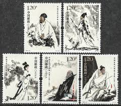 |
| Find Your Stamps Value | Ancient Chinese Writers: Cao Zhi holding sword at side - 中国古代文学家: 抱着剑在他身边的曹植30f Multicolored stamp price, value | 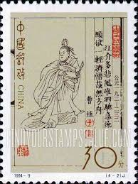 |
| eBay | China FDC - 1983 J92 Writers of Ancient China (1st Series) | eBay | 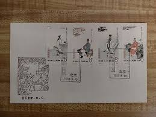 |
| eBay | Gekko Ogata Japan Woodblock Prints Kimono Men Riverside Bridge Boat Tree Grandpa | eBay | 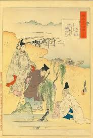 |
| Discogs | 马季Discography: Vinyl, CDs, & More | Discogs | 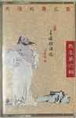 |
| Alamy | CHINA - CIRCA 1987: a stamp printed in the China shows parade, Sino-Japanese war, 50th anniversary, circa 1987 Stock Photo - Alamy | 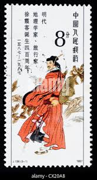 |
| lastdodo.com | Toyo Oda [1420-1506] Stamp catalogue - LastDodo | 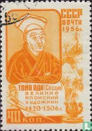 |
| Colnect | Stamp: Yu, the Great (Taiwan (Republic of China)(Chinese Culture Heroes) Mi:TW 917Y,Yt:TW 974 📮 | 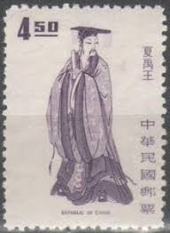 |
| Amazon.com | Amazon.com: 发现你自己就能够赢得一个世界: 9787518039159: 耿兴永, 新华书店北美网: Books | 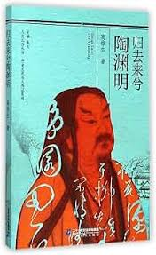 |
| eBay | Japan Golden Jubilee Emperor Accession To The Throne 1976 Dance Car (FDC) *card | eBay | 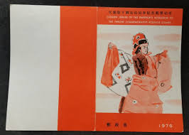 |
| eBay | ROC]1975 official souvenir booklet,with Sc 1942/5 t44 | eBay | 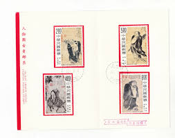 |
| Xabusiness.com | 1994 China Stamps | 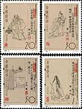 |
| Gemba Academy | The Will, the Willow and the Frog | Gemba Academy | 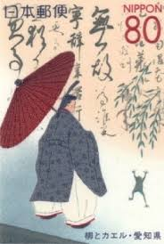 |
| eBay | China Macau Macao 2004 Literature Li Sao stamps 澳门文学与人物-离骚 | eBay | 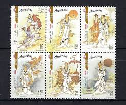 |
| inf.news | Why didn't Qin Shihuang make Fusu the crown prince? Why did Fusu commit suicide when he saw the imperial decree? - iNEWS | 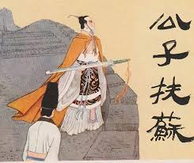 |
| IMDb | Bao lian deng (1956) - IMDb | 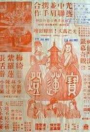 |
| Massachusetts Institute of Technology | MIT Visualizing Cultures | 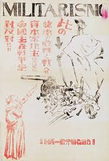 |
| PicClick | CHINA MACAU 2004 Literature Li Sao Stamps Mini Pane MNH 澳门文学与人物离骚MACAO $10.50 - PicClick | 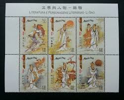 |
| PicClick | P.R. OF CHINA 2018-25 The Full Moon Mid-Autumn Festival Comp. Set 1 Stamps Mint $0.99 - PicClick | 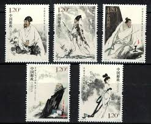 |
| eBay | Art,Painting,Folkways,Costume,Natl.Treasure,Japan 1977 FDC,Cover | eBay | 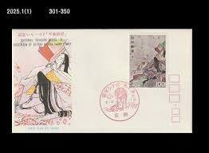 |
| Alamy | Yemen circa 1972 stamp printed hi-res stock photography and images - Alamy | 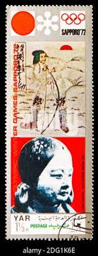 |
| eBay | 歷代后妃傳 林美玲 編著 | eBay | 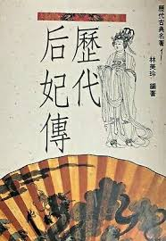 |
| eBay | CHINA 2023-24 Writers of Ancient China (V) Stamp 古代文学家（五） | eBay | 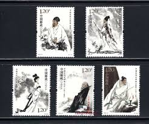 |
| eBay | CHINA ASIA USED COMMEORATIVE STAMP LOT (Chine 239) | eBay | 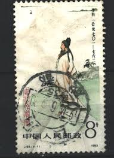 |
| eBay | China 1994-14 Paintings of Fu Baoshi Stamps on B-FDC (2 covers) 傅抱石作品选邮票首日封(B封) | eBay | 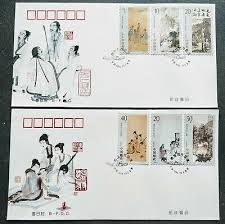 |
| 🐾 The Donkey of Qian | 黔之驴Part II of “The Three Warnings” (柳宗元《三戒》) When noise becomes disguise. Sometimes we mistake volume for strength — believing that noise alone can command respect. But | ||
| eBay | CHINA P.R.C. SC# 2501-2504 ANCIENT CHINESE WRITERS - MNH | eBay | |
| Bolerium Books | Tian di ren, No. 14 Nov. 1. 1952 天地人：第十四期 | |
| Shutterstock | 3+ Hundred Si Tao Royalty-Free Images, Stock Photos & Pictures | Shutterstock | |
| MutualArt | Dai Dunbang | Does not fall fortune | MutualArt | |
| Amazon.com | Amazon.com: Masaya Takeda: books, biography, latest update | |
| eBay | Japanese Ukiyo-e Letterpress Printing Meiji Customs Magazine No.357 1907/2/10 | eBay | |
| eBay | REP. OF CHINA TAIWAN 2000 CLASSICAL NOVEL (ROMANCE OF 3 KINGDOMS) SOUVENIR SHEET | eBay | |
| eBay | 1960's 董文霞 夏承平 天仙配 Old Chinese movie flyer Tong Wen Hsia Hsia Cheng Ping | eBay | |
| eBay | Eureka Feb 2002 Poetry and Criticism Hikaru Genji Monogatari Magazine Book Japan | eBay |